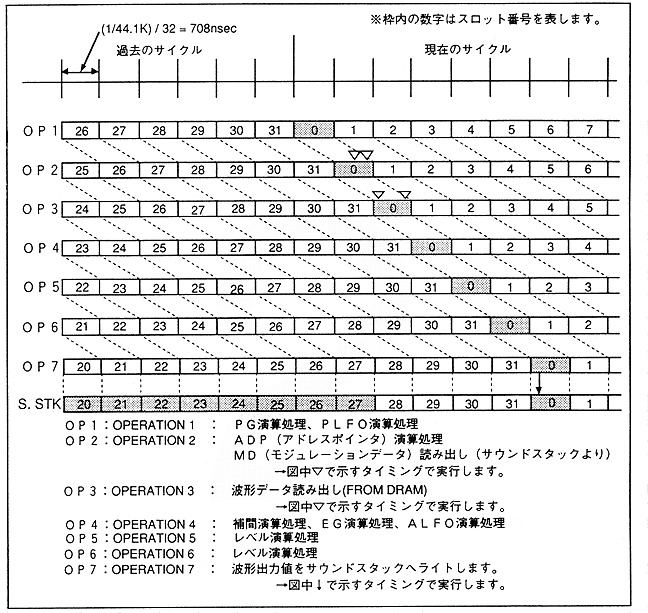

Figure 4.30: Slot operation and sound stack status

Slot calculation starts with PG calculation processing and PLFO calculation processing (OP1), ADP (address pointer) calculation processing, MD (modulation) data reading (OP2), waveform data reading (OP3), interpolation calculation processing and EG calculation processing It is executed in the cycle of ALFO calculation processing (OP4), level calculation processing (OP5) (OP6), and waveform output value sound stack write (OP7). Since level calculation processing is long, it requires two cycles.
When looking at the arithmetic processing temporarily, for example, “When slot 3 is performing PG arithmetic processing and PLFO arithmetic processing, ADP arithmetic processing and MD reading are in slot 2, waveform